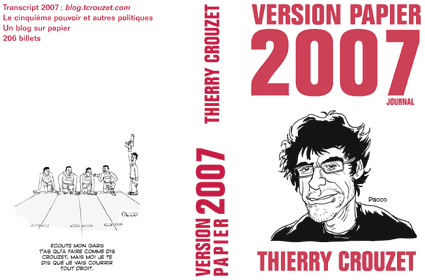

Version papier 2007
Comme l’année dernière, je profite de l’été pour relire mon journal de l’année précédente. Je viens de générer la version papier 2007 de ce blog et de la publier sur lulu pour la relire confortablement.

Suite | 2008 | Sommaire | Texte publié mercredi 23 juillet 2008